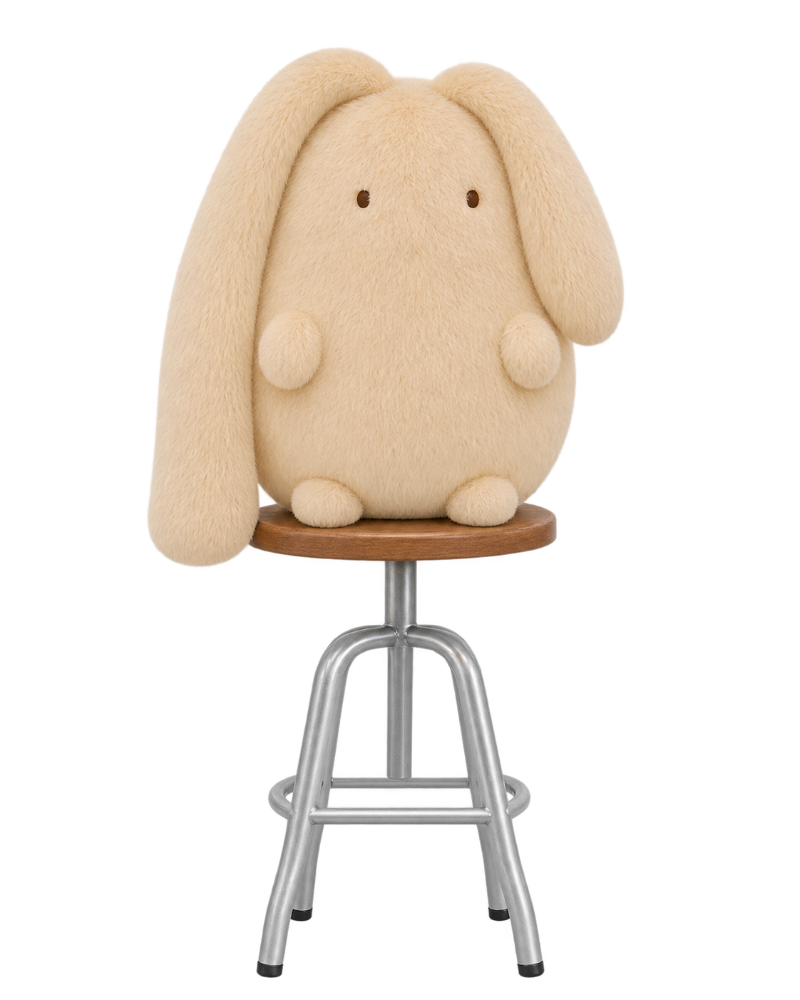
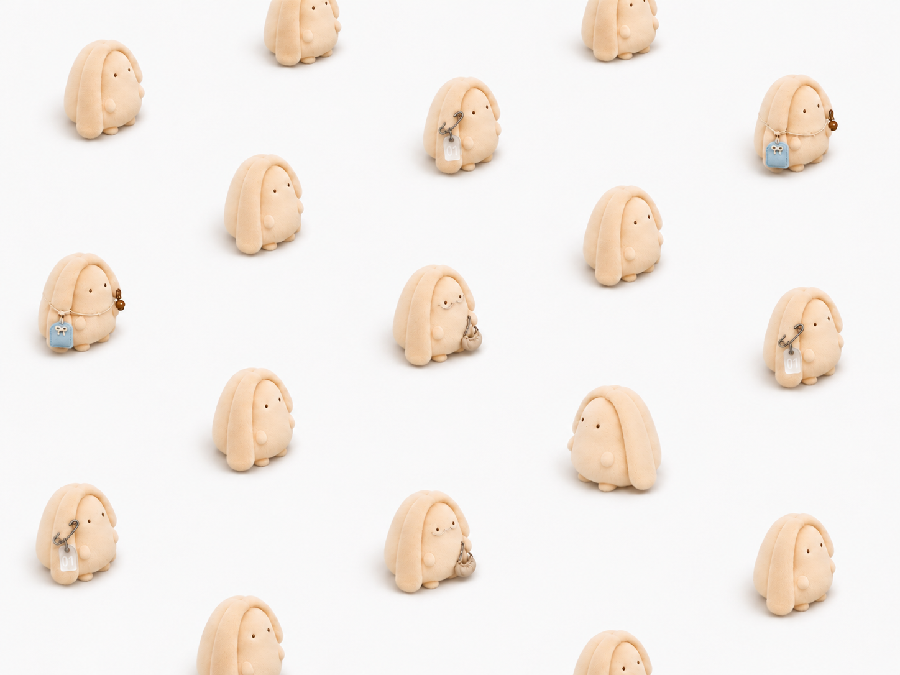
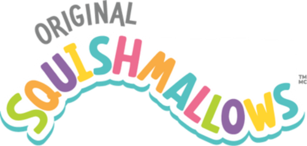
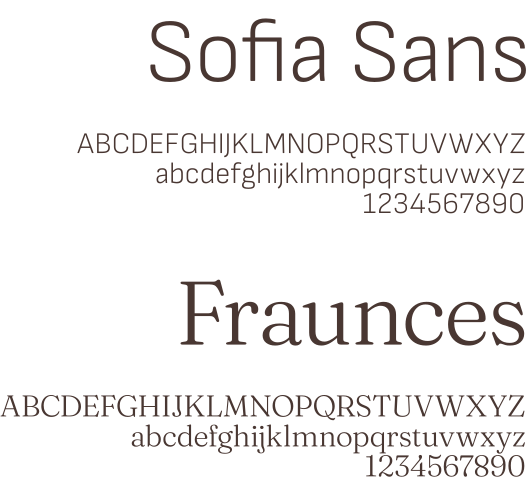

Brand and
Project
Overview
Yu Yuedong
YEAR: 2026
Tiny Strange is an independent design toy
brand from China. It uses AI and designer
refinement to turn a customer's mood and
keywords into a small collectible plush friend.
Its main overseas market is the United States.
Soft Friends is the official product series. The
customer chooses a mood, colours and one
keyword. AI gives the first character idea, and
a designer will adjust the face, colours and
small symbols. Each character uses one fixed
18 cm plush body, with a character card and
a gift box.
The first customers are Gen Z and young
millennial consumers aged 18 to 30 in the
United States. They like character toys, desk
objects and personalised gifts. Different
moods deserve different little friends. Being a
little strange is not a problem. Soft, Odd and
Personal guide the brand.
SOFT: The plush and its character
have a gentle feel.
ODD: A small strange detail makes
the character different.
PERSONAL: The customer's mood,
colours and keyword.
PRODUCT: 18 cm collectible plush,
dense minky pile about 2 to 4mm.
Includes a character card and a box.
ORIGIN: China
MARKET: United States



A table by the street
A quiet sofa
A long afternoon




Jellycat
A premium design-led plush toy and
gift brand from London.
Jellycat uses black, white and orange,
with bright blue on some digital
pages. The range includes animal
plush, Amuseables characters, bags,
charms, baby gifts and books. Its
philosophy is playfulness, creativity
and sharing joy.
Key observation: Original characters
and playful retail can make plush toys
become emotional gifts. Jellycat uses
a brand-led character catalogue.
Squishmallows
A soft character-led collectible plush
and lifestyle brand for fans of all ages.
Squishmallows uses a soft
multicolour palette: teal, pink, purple,
yellow, orange and lime green. The
plush comes in many sizes, including
original characters, seasonal
editions, licensed collaborations,
mini collectibles and pillows. The
brand focuses on comfort through
softness.
Key observation: Names, biographies
and collecting can build a large
character community. It has a large
character library.
A global retailtainment brand. It
combines personalised plush toys
with interactive store experiences.
Build-A-Bear uses blue, warm yellow
and red, with multicolour letters in its
logo. Products include make-your-
own and pre-stuffed plush, sounds,
scents, clothing, accessories, gifts
and licensed characters. The brand
wants plush friends to stay with
people in important life moments.
Key observation: Customers join the
making process through stuffing,
dressing and naming.
Soft fur
warm light
rounded forms
A strange little mark and a lime spark
One friend close up
and only yours


A soft mark with a slightly
odd orbit.
The same lockup is used on
paper, on the box, and on a
small woven label.
Keep the space around it
clear, and let the stitch stay
close to the original form.
Cocoa Brown
#4A3833
Mist Pink
#EABFC0
Fresh Lime
#B7D84B
Oat Beige
#DDCDB8
Fraunces is the serif. Sofia Sans is
the sans.
They can share a title, a note, or
a short line, as long as the two sit
clearly together.
Do not add a third typeface. Let
the contrast come from weight,
size, and the space around the
words.

The pattern is a soft grid of
open circles.
It can sit on a box, a card, or a
quiet field of colour, without
competing with the mark.
Keep the spacing even, and
let the circles stay open.

A cream lop-eared rabbit with no
mouth and small, rounded hands.
The fur is short and dense, about
two to four millimetres, made to
feel soft in the hand and a little
odd at first sight.
One body, eighteen centimetres.
The same size for every Soft
Friend, so the difference lives in
the face, the ears, and the marks
you choose. They’re only yours.

Start with Oat, then add the pieces
you like: a ribbon, a pin, a hat, a
scarf, or a tiny bag. The body stays
the same. The look is yours.
Parts are made to come on and off,
so a Soft Friend can change with a
mood, a colour, or a season. Keep
the additions small, and let the face
stay clear.


A new friend, already looking out

Oat takes the long way down the hill

The field is loud. The song is not

A small umbrella, and weather that does not mind

A quiet room, and a friend who stayed


The box uses the words already in the brand. Soft Friends,
Soft to hold, and a few short lines are spaced out like a small
typesetting exercise, so the package can be read as a layout
as well as a gift.


A small card goes home with
every friend.
Thank you sits large, and a short
line tucks into the mark: for
bringing your friend home.
Keep the orbit and the spark
close to the original form.


The site is a quiet room you can
walk into.
Soft Friends sit in the light, and
a short line stays in the picture:
Soft Friends for Your Own
Strange World.
It is a place to look, and then to
meet the collection.


A short line does the
talking: They’re only yours.
Below it, a mood, a few
colours, and a word you
like are enough to start a
Soft Friend.
The same poster can sit in
a street, or on a quiet page.


The box is plain, and the pattern
does the soft work.
Tiny Strange sits with Soft, Odd,
Personal, and one short line: Soft
things for your own little world.
It is a parcel, and also the first
thing you see.


Not every idea stays.
The weak drafts go in the bin, so
the strongest form can remain.
What you see is what survived.